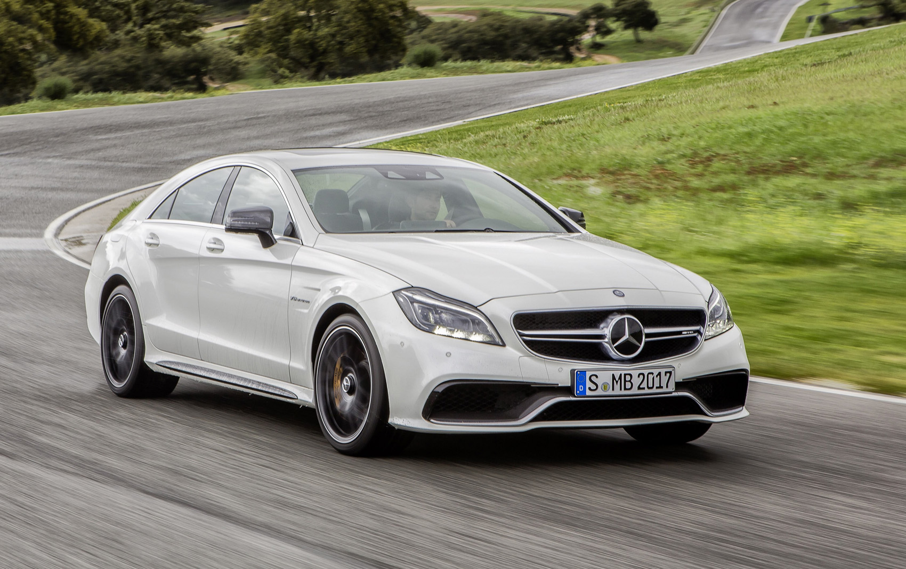
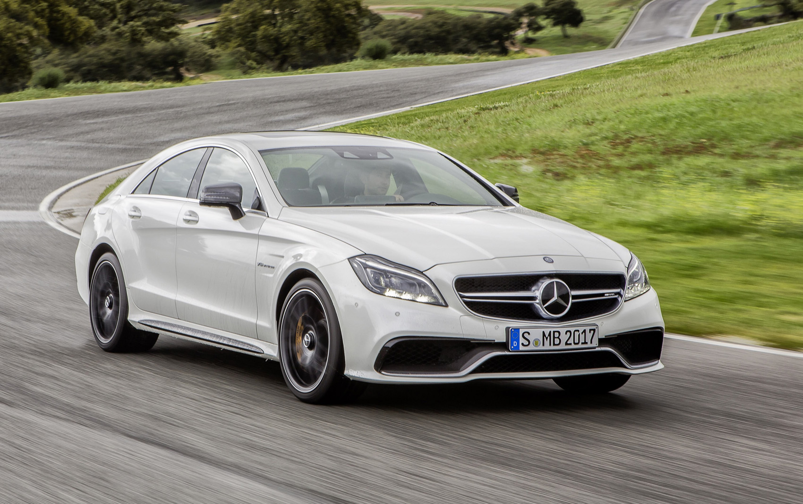
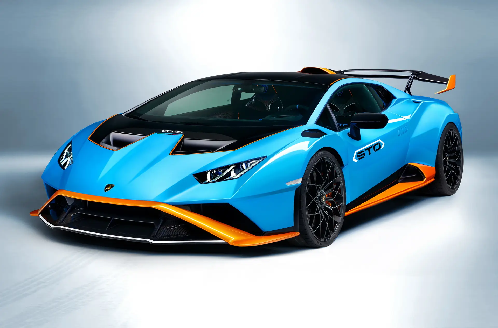
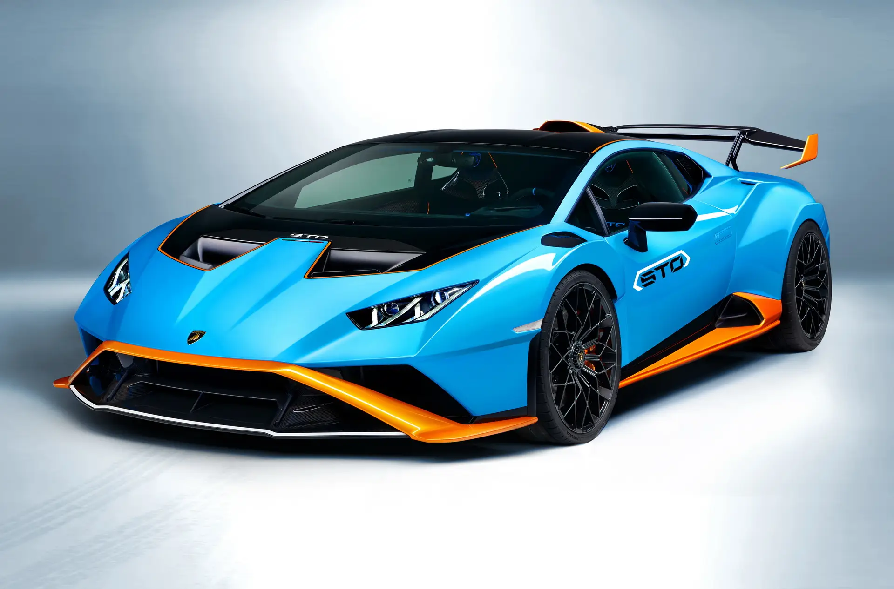
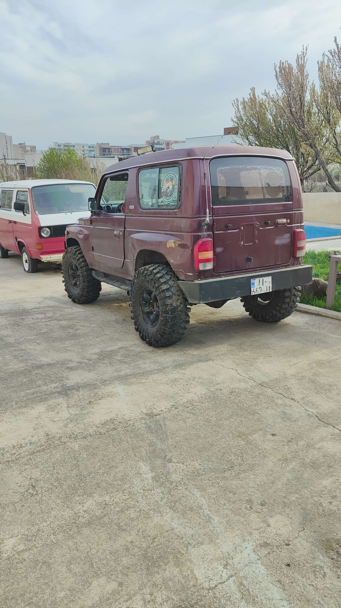
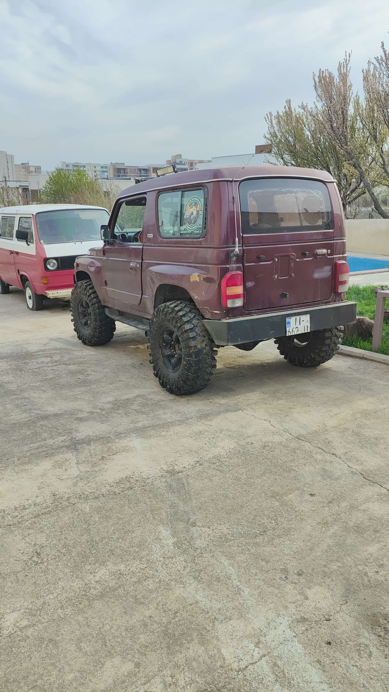

The Mercedes-Benz CLS (initially called the CLS-Class) is a series of executive cars produced by Mercedes-Benz from December 2003 to August 2023.
The original model was a four-door sedan based on the Mercedes E-Class platform, marketed as a four door coupé.
An estate (shooting brake) model was later added to the model range with the second generation CLS. All models are available as
a high performance AMG variant,
although it wasn't until the second generation CLS that 4MATIC all-wheel drive was offered.
price:90 000$
The Porsche 911 is a two-door 2+2 rear-engined high-performance sports car that was introduced in September 1964 in Stuttgart
, Germany . It has a rear-mounted six-cylinder boxer engine and original torsion bar suspension. The car has been continuously
improved over the years, but the basic concept has remained the same.
The engines were air-cooled until 1998
Price:180 000$
The BMW M5 is a high-performance variant of the BMW 5 Series marketed under the BMW M sub-brand.
It is considered an iconic vehicle in the sports saloon category. The M5 has always been produced in the saloon
(sedan, US English) body style, but in some countries the M5 has also been available as an estate/touring
(wagon, US English) from 1992 to 1995, from 2006 to 2010, and since 2024.
The first M5 model was hand-built beginning in late 1984 on the E28 535i chassis with a modified engine from the
M1 that made it the fastest production saloon at the time.
Price:120 000$
 

The Huracán STO (Super Trofeo Omologato) is a track focused variant of the Huracán. The STO has a taller rear
wing with a roof snorkel for engine cooling. There is a shark fin aerodynamic device connecting the roof snorkel with the rear wing.
The engine cover is reminiscent of the Lamborghini Super Trofeo Evo race cars. The entire hood opens to reveal a small compartment
for storing racing equipment and the body is made of 75% carbon fibre. The engine and the power output of the STO is the same as
the Huracán Performante and the Huracán Evo and it has rear-wheel drive with a rear wheel steering system and CCMR Brakes inspired
from Formula 1. The STO comes with three new driving modes: STO for road driving, TROFEO for fast lap times on dry tarmac,
and PIOGGIA for wet weather driving.
The bucket seats on the interior feature
Price:220 000$
 

The Kia Retona is a small mini SUV based on Kia's military jeeps. The name is a portmanteau of return to nature.
Developed by Asia Motors, the car was initially sold as the "Asia Retona" in some markets. The Retona had been using
the same platform as the first generation Kia Sportage Convertible.
Its competitors included the Lada Niva, Suzuki Jimny and the SsangYong Korando.
Price:15 000$


The Mitsubishi Lancer Evolution, popularly referred to as the 'Evo',[1] is a sports sedan and rally car based on the Lancer
that was manufactured by Japanese manufacturer Mitsubishi Motors from 1992 until 2016. There have been ten official versions
to date, and the designation of each model is most commonly a Roman numeral.
All generations use two-litre intercooled turbo inline four-cylinder engines and all-wheel drive systems.
Price:36 000$
Rolls-Royce Motor Cars Limited is a British luxury automobile maker that has operated as
a wholly owned subsidiary of BMW AG since 2003 – as the exclusive manufacturer of Rolls-Royce-branded motor cars
. The company's administrative and production headquarters are located on the 42-acre (17 ha) Goodwood Estate in Goodwood,
West Sussex, England, United Kingdom.
From 1906 to 2003, motor cars were manufactured and marketed under the Rolls-Royce brand by Rolls-Royce Limited and Rolls-Royce
Motors. The Rolls-Royce Motor Cars subsidiary of BMW AG has no direct relationship to Rolls-Royce-branded vehicles produced before
2003, other than having briefly supplied components and engines.
Price:320 000$

McLaren Racing Limited (/məˈklærən/ mə-KLARR-ən) is a British motor racing team based
at the McLaren Technology Centre in Woking, Surrey, England. The team is a subsidiary of the McLaren Group,
which owns a majority of the team. McLaren is best known as a Formula One chassis constructor, the second-oldest
active team and the second-most successful Formula One team after Ferrari, having won 191 races, 12 Drivers' Championships,
and nine Constructors' Championships. McLaren also has a history in American open wheel racing as both an entrant and a chassis
constructor, and has won the Canadian-American Challenge Cup (Can-Am) sports car racing championship. McLaren is one of only
three constructors, and the only team, to complete the Triple Crown of Motorsport
(wins at the Indianapolis 500, 24 Hours of Le Mans, and Monaco Grand Prix).
Price:390 000$
Aston Martin Lagonda Global Holdings PLC (/ˈæstən/) is a British manufacturer of luxury
sports cars and grand tourers. Its predecessor was founded in 1913 by Lionel Martin and Robert Bamford. Headed from
1947 by David Brown, it became associated with expensive grand touring cars in the 1950s and 1960s, and with the fictional
character James Bond following his use of a DB5 model in the 1964 film Goldfinger.
Their grand tourers and sports cars are regarded as a British cultural icon.
Aston Martin has held a royal warrant as purveyor of motorcars to Charles III (as Prince of Wales and later as King) since 1982,
and has over 160 car dealerships in 53 countries, making it a global automobile brand.
Price:135 000$


The Audi R8 is a mid-engine, 2-seater sports car, which uses Audi's trademark quattro permanent all-wheel drive system.
It was introduced by the German car manufacturer Audi AG in 2006. Production ended in the first quarter of 2024.
The car is exclusively designed, developed, and manufactured by Audi AG's private subsidiary company manufacturing high
performance automotive parts, Audi Sport GmbH (formerly quattro GmbH),
and is based on the Lamborghini Gallardo and presently the Huracán platform.
The fundamental construction of the R8 is based on the Audi Space Frame.
Price:200 000$